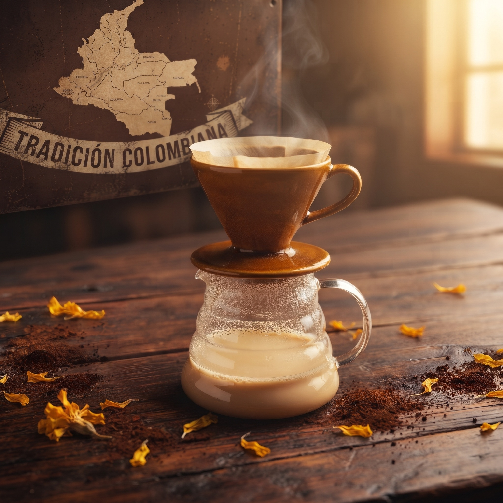

Nuestra Esencia
Café Macondo nace de la pasión por cultivar y servir los mejores granos de altura bajo la inspiración del realismo mágico colombiano. Cuidamos cada etapa del proceso, desde la recolección artesanal hasta la taza que disfrutas todos los días.
Lo que dicen nuestros clientes
"El mejor espresso de especialidad que he probado en la ciudad. El ambiente y la calidez del lugar son incomparables."
El Viaje del Grano
Cada grano de Café Macondo recorre un viaje mágico desde las montañas de altura. Cosechado a mano y procesado con esmero para preservar su carácter único y la trazabilidad completa.
- Selección: Recolección manual de cerezas maduras.
- Procesamiento: Lavado y secado artesanal al sol.
- Tueste: Curvas de tueste medio para potenciar notas florales.
Favoritos de la Temporada
Una muestra de nuestras preparaciones más queridas por quienes nos visitan a diario.

Espresso Macondo
Extracción concentrada con cuerpo sedoso, acidez brillante y notas a panela y chocolate negro.
$ 5.500 COP

Experiencia Filtrado V60
Método de goteo manual que resalta la claridad aromática, con notas florales y frutas cítricas.
$ 35.000 COP

Cappuccino Cremoso
Espresso doble combinado con leche texturizada al punto exacto de microespuma aterciopelada.
$ 7.500 COP